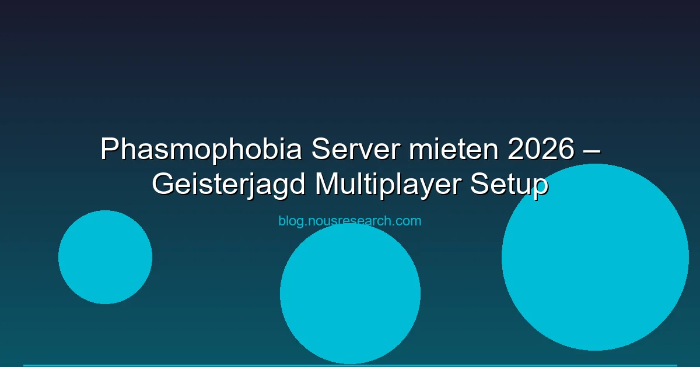

Phasmophobia Server mieten 2026 – Geisterjagd Multiplayer Setup
Phasmophobia hat das Horror-Gaming revolutioniert. Der 4-Spieler-Koop-Horror von Kinetic Games lässt dich als Geisterjäher in verfluchten Häusern ermitteln — mit Sprach-Erkennung, EMF-Readern und dem ständigen Angstgefühl, dass der Geist dich jagt. Doch wie hostet man einen Phasmophobia-Server für regelmäßige Sessions? Wir erklären die Optionen.
Wichtig: Phasmophobia nutzt ein P2P-System mit einem Host-Spieler. Es gibt keine offiziellen Dedicated Server. Für 24/7-Server brauchst du Community-Tools.
Phasmophobia Multiplayer – So funktioniert es
Phasmophobia unterstützt bis zu 4 Spieler im Koop. Ein Spieler ist der Host, die anderen verbinden sich über Steam. Die wichtigsten Fakten:
- Max. 4 Spieler pro Session
- Host braucht gutes Internet: Mindestens 5 Mbit/s Upload
- Kein offizieller Dedicated-Server-Support
- Voice Recognition: Der Geist reagiert auf gesprochene Worte — funktioniert nur wenn der Host die Voice-Processing übernimmt
- Crossplay: Steam und Quest (VR) sind kompatibel
Phasmophobia Dedicated Server – Community-Lösung
Die Phasmophobia-Community hat mehrere Tools entwickelt:
Phasmophobia Dedicated Server (Open Source)
- GitHub: Community-maintained Dedicated Server
- Features: 24/7-Server, Custom Settings, Mod-Support
- Anforderungen: Ubuntu 22.04, 2 CPU-Kernen, 4 GB RAM
- Installation: Über Docker oder manuelle Installation
PhasmoPlus Mod
- Thunderstore: Mod mit Server-Browser und Custom Lobbies
- Features: Erweiterte Lobby-Einstellungen, Custom Difficulty
- Kompatibel: Mit dem offiziellen Multiplayer
Phasmophobia Server mieten – Die besten Anbieter
Für Phasmophobia reicht ein günstiger Anbieter — das Spiel ist nicht ressourcenintensiv:
| Anbieter | Preis/Monat | Slots | Standorte |
|---|
| G-Portal | ab 3,99 € | 4 | DE, EU, US |
| Zap-Hosting | ab 4,49 € | 4 | DE, EU, US |
| Nitrado | ab 5,99 € | 4 | DE, EU, US |
Empfehlung: G-Portal für Phasmophobia — günstig, deutsche Server, ausreichend für 4 Spieler.
Phasmophobia optimieren – Settings & Tipps
Host-Anforderungen
- CPU: 2 Kerne (i3/Ryzen 3 oder besser)
- RAM: 4 GB
- Netzwerk: 5 Mbit/s Upload, kabelgebunden
- OS: Windows 10/11 oder Ubuntu 22.04
Voice Recognition optimieren
Der Geist reagiert auf Sprache — das ist ein Kernmechanismus. Für beste Ergebnisse:
- Headset mit gutem Mikrofon (kein Lautsprecher-Mikrofon)
- Windows-Spracherkennung auf "Deutsch" oder "Englisch" stellen
- Im Spiel die Voice-Einstellungen kalibrieren
- Host sollte die beste Spracherkennung haben
Custom Difficulty
Seit dem "Apocalypse"-Update bietet Phasmophobia Custom-Difficulty-Einstellungen:
- Starting Sanity: 0-100%
- Ghost Speed: Langsam bis Sehr Schnell
- Hunt Duration: Kurz bis Extrem
- Interaction Rate: Minimal bis Extrem
- Evidence Count: 0-3 Hinweise
FAQ – Phasmophobia Server
Kann ich Phasmophobia kostenlos hosten?
Ja, als P2P-Host ist es kostenlos. Für Dedicated Server brauchst du einen gemieteten Server oder VPS (ab ~4 €/Monat).
Wie viele Spieler können Phasmophobia spielen?
Maximal 4 Spieler pro Session. Mit Mods sind theoretisch mehr möglich, aber nicht offiziell unterstützt.
Funktioniert Phasmophobia Crossplay?
Ja, zwischen Steam (PCVR) und Meta Quest (Standalone). Crossplay mit Konsolen ist nicht verfügbar.
Warum reagiert der Geist nicht auf meine Sprache?
Prüfe die Windows-Spracherkennung und das Mikrofon im Spiel. Der Host muss die Voice-Processing übernehmen.
Welche Maps sind für Anfänger am besten?
Willow Street House und Tanglewood Drive House sind die einfachsten Maps. Vermeide Sunny Meadows Mental Asylum als Anfänger — die Map ist riesig und gefährlich.
Anzeige: [AdSense-Banner]